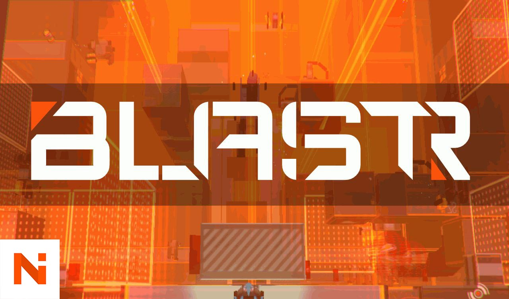
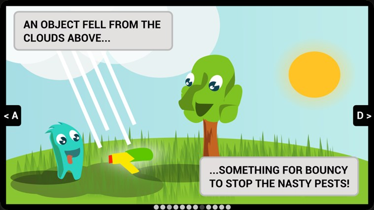

Self-Published Games (2011 - present)
In my own time, I've concepted, designed, programmed, and maintained a number of games across Android, iOS, BlackBerry, Windows Phone and PC
April 2020 - January 2022
-
Improved the fast-paced cricket engine for maximum performance across all devices
-
Built and maintained a Live-Ops pipeline with PlayFab backend services
-
Created Live Events weekly for players, using server-side logic to organise and distribute prizes for leaderboards
-
Used BI tools and analytics platforms to make data-driven decisions on new game features, tuning difficulties, and general game growth strategy
-
Built and maintained an in-game Economy for players to own and manage their cricket teams; generated IAP revenue through virtual items
Dec 2014 - present
-
Designed a fast-paced, stripped-down version of cricket for mobile
-
Maintained a strong userbase of 30,000 Daily Active Users through continuous updates over 2 years
-
Built a system to override gameplay curves through server-side data files
-
Developed and tested multiple app monetisation strategies
-
Started building a larger economy system with virtual currencies and sources/sinks in order to drive better long-term interaction


July - Nov 2014
-
Designed a linear third-person character adventure with multiple levels and interactions
-
Built a physics-based weapons system that would interact with enemies by pushing or pulling them with magnetic forces
-
Developed a bespoke spoken-dialogue engine and music cue system
-
Concepted and created all art assets; 3D models, textures, and UI
-
Showcased at a Microsoft-sponsored booth at Penny Arcade Expo Australia
.jpg)
Nov 2013
-
My attempt at bringing the thrills of the Red Bull Air Race to mobile devices, with simple mechanics that are hard to master
-
One of my first games on the Unity engine, I did all the art, code, and design
-
Custom flight controls and checkpointing system


Jan 2014 - Feb 2014
-
I was inspired to explore Uncharted's aesthetic and atmosphere in my own games. Only a couple of weeks into development did I realise how immense the task was!
-
Character animations, keyframing, and using Mecanim was a part of the development process
-
Implemented dynamic camera system that combined character tracking with pre-built camera patterns when in special locations
.jpg)
.jpg)
Sep 2013 - Dec 2013
-
One more my first 3D games. I used this to learn the basics of 3D texturing, modelling, etc.
-
Built a motorsport race director system that keeps track of all racers' laptimes, positions on track, and checkpoints

Oct 2011 - Nov 2011
-
HTML Canvas-based 2D game using custom Javascript engine
-
Utilised the experimental Mozilla Gamepad API to implement controller support in-browser
-
Created achievements system, UI layer using the DOM, an audio engine with SFX and music
-
Won the Mozilla Dev Derby for succesfully utilising the HTML5 Canvas element